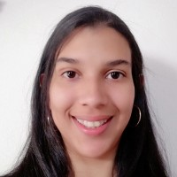

Hola, soy Carla Rondon, me entusiasma comenzar una carrera en el área de tecnología, me propuse está meta y voy a dar todo de mi para lograrlo. Soy de Valencia, Venezuela y vivo en Colombia desde el 2019. Quiero continuar preparandome para ser una profesional en este hermoso país y colaborar con su desarrollo, actualmente vivo en la ciudad de Medellín, ciudad que se hace querer facilmente.
Hola! Soy Carla
Hablemos!
Actualmente me preparo en este curso de Desarrollo Web ofrecido por Código Pa´ Lante y adicionalmente curso el tecnólogo de análisis y desarrollo de software ofrecido por el Servicio Nacional de aprendizaje SENA. Lo realizo de manera virtual, estos son los primeros pasos que estoy dando para lograr ser una profesional, mis deseos son terminar el tecnólogo y continuar con los estudios de pregrado